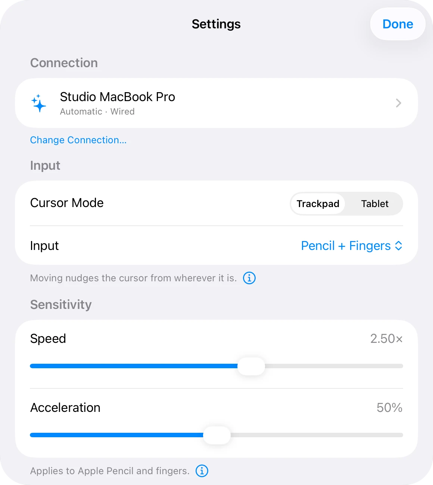
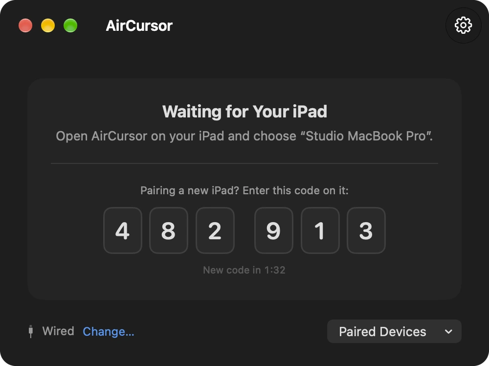
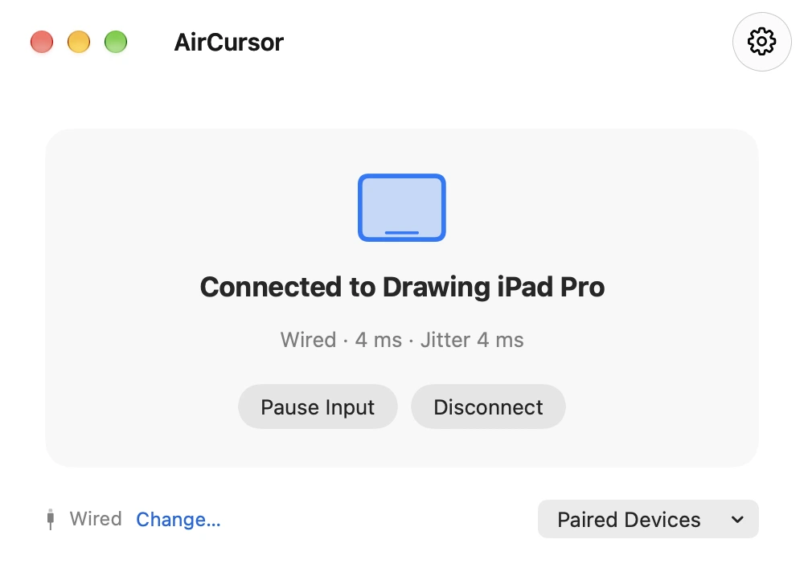
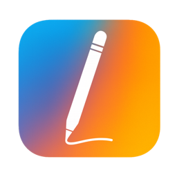

Trackpad mode
The cursor moves from wherever it is. Set the speed and acceleration on either device and they stay in sync. Hovering and drawing move it the same distance.
Free on the App Store during launch
AirCursor turns iPad and Apple Pencil into a pressure‑sensitive drawing tablet and a trackpad for your Mac.
Install it on your iPad and your Mac. Requires iPadOS 17 and macOS 14 or later.
Tablet mode puts the cursor exactly where the Pencil lands. Pressure flows through to the app you draw in.
Two cursor modes
Glide like a trackpad, or land exactly where you aim like a pen tablet. Switch any time with ⌘ R on an iPad keyboard.
The cursor moves from wherever it is. Set the speed and acceleration on either device and they stay in sync. Hovering and drawing move it the same distance.
Every spot on the iPad is a spot on your Mac. Pick the display, choose an area on each side, and keep the aspect ratio matched, just like a Wacom tablet.
Pressure
Pressure arrives as real tablet events, so brushes in pressure‑aware apps swell and taper. Click pressure decides when a press becomes a click. The drawing curve shapes how pressure reaches your brush, and never changes clicking.
With Apple Pencil Pro, Click Feedback taps the Pencil the moment a press crosses the line.
Settings
Your Mac, cursor mode and input sit right at the top, with speed and acceleration below them in Trackpad mode. Change the speed on either device and the other follows.
Apple Pencil, Finger Gestures, Tablet Mode and Appearance each have a page of their own.

Finger gestures
Put the Pencil down and your fingers take over: Pencil and fingers, Pencil only for palm‑friendly drawing, or fingers only.
Tap to click
Two-finger tap to right‑click
Two-finger scroll that coasts
Pinch to zoom
Three-finger swipe for Spaces
On iPads and Pencils that hover, glide above the glass to move and touch to click.
Map them to right‑click, middle‑click, undo, redo, Escape, or a mode switch.
Fingers stay ignored for a moment after the Pencil was last near the screen. You choose how long.
Connections
Each style shows the latency to expect before you pick it. Motion smoothing replays bursts at the pace you drew them, so the cursor glides instead of jumping. Clicks never wait.
Needs a USB-C data cable between iPad and Mac. The most responsive style.
Uses the Wi-Fi network both devices are on.
Works with Wi-Fi off. Motion smoothing evens out its bursts.
Tries Wired, then Wi-Fi, a direct peer-to-peer link, or Bluetooth, whichever is available.
Peer-to-Peer Wi‑Fi and Manual IP are there too, for places without a shared network.
Compatibility
AirCursor works out which Pencil you have from what it senses, and only offers the settings it can use.
| Apple Pencil | Pressure | Hover | Double-tap | Squeeze |
|---|---|---|---|---|
| Apple Pencil Pro | Yes | Yes | Yes | Yes |
| Apple Pencil (2nd generation) | Yes | iPad Pro (M2) | Yes | No |
| Apple Pencil (USB-C) | No | Yes | No | No |
| Apple Pencil (1st generation) | Yes | No | No | No |
Hover needs iPad Pro (M2 and later), iPad Air (M2 and later) or iPad mini (A17 Pro).
Private by design
A six‑digit code pairs your devices a single time. After that, every stroke travels end‑to‑end encrypted, and only to your own Mac.

No account, no analytics, no ads. AirCursor never talks to a server. It doesn't even touch the network or Bluetooth until you choose a connection style.
On the Mac
Check the connection, nudge the speed, or pause input from any app with ⌃ ⌥ ⌘ P . Either device can resume.
Open at Login brings it back after a restart, and paired iPads reconnect on their own.


Free during launch
Install AirCursor from the App Store on your iPad and your Mac. Pair them once with a six‑digit code, and you're drawing.